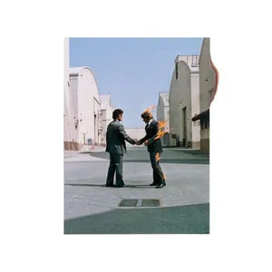

OK ComputerArtist: RadioheadReleased: 16 June 1997Genres: Alternative Rock, Art Rock

Wish You Were HereArtist: Pink FloydReleased: 12 September 1975Genres: Alternative Rock, Art RockIn the Court of the Crimson KingArtist: King CrimsonReleased: 10 October 1969Genres: Progressive Rock, Art Rock
Хип-хоп
To Pimp a ButterflyArtist: Kendrick LamarReleased: 15 March 2015Genres: West Coast Hip Hop, Jazz RapMadvillainyArtist: MadvillainReleased: 23 March 2004Genres: Abstract Hip Hop, Jazz RapIllmaticArtist: NasReleased: 19 April 1994Genres: East Coast Hip Hop, Jazz Rap
Джаз
Kind of BlueArtist: Miles DavisReleased: 17 August 1959Genres: Modal Jazz, Cool Jazz, BalletThe Black Saint and the Sinner LadyArtist: MingusReleased: 20 January 1963Genres: Avant-Garde Jazz, Third StreamMiles DavisArtist: Miles DavisReleased: 30 July 1969Genres: Jazz Fusion, Modal Jazz
По вопросам о ценах товаров звонить на: +7 (918) - 266 - 56 - 666